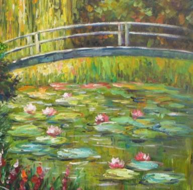

Neural Style Transfer
by Anaga Rajan and Ankit Mathur
Project Github: github.com/rajananaga/neural-style-transfer
Introduction
What does it mean to be an human in the visual world? It does not just mean just seeing. Countless blind artists could not see, yet they produced some of the most outstanding artwork of all time. These people do not just use sight to classify an object, they use touch. There's something deeper here - texture and color are different parts of art. As we drive forward in the world of computational photography, we can see that the latest developments have focused on teaching machines how to actually create visual beauty. Just like a child, we want to teach them not only how to classify these images but also how to construct textures and objects. We want to teach them to be artists. This is the ambitious goal of this research.
Algorithm
The simplest step in this endeavor is to find a way that we can show an algorithm a style of art and a normal image and have the algorithm paint that image in the style of the first. The Gatys et al '14 paper "Image Style Transfer Using Convolutional Neural Networks" describes an algorithm to do this.
The fundamental basis of the algorithm that is described by the Gatys et al '14 paper seeks to optimize for a content and style loss. This is a reasonable abstraction for a way to create an image that has the same style as the original image but still looks like the prior image.
Convolutional Neural Networks
The method prescribed by the paper asserts that the output of performing certain convolutions on the different parts of the image can be used as signal about what exists in those regions. This makes sense, since the convolutional operator essentially gives you some high level information about the regions it is convoluting over.
Then, it must be decided what kind of convolutions we want output from. Here, we bring in the VGG19 neural network. Originally designed for the broad scale image classification case, we are actually more interested in the structure of the network. Here is what it looks like:
Note how the first layers of the convolution have the image as a larger component - this implies that the convolutions you do will give you more fine-grained details.
What the paper asks us to do is to get the convolutional filter responses from a certain set of convolutional layers. Based on which layer one gets the filter responses from, you would get different kinds of information about the image.
Content Loss
The paper defines the content loss as the sum of the L2 losses between the corresponding filter responses at the layers of the target image and the content image.
The paper suggests that we use the conv4-2 layer's filter outputs. This is because conv4-2 preserves the content while losing the high frequency details (as a result of being from a later layer of the convolutional network). These are some results obtained from the different kinds of content layers one could match on:
Style Loss
The style loss is much more difficult to intuitively describe. In essence, what the paper asserts is that we want the low and high level style features. Thus, we should be using layers throughout the convolutional depth for that (i.e. conv1-1, conv2-1, conv3-1, conv4-1, and conv5-1)
To get a representation of style given a certain layer, the Gram matrix is composed. In essence, what this is is an autocorrelation of the different convolutional filter responses with every other filter response for the same image. In words, one might describe this as being a representation of style because it represents how different components of the image relate to each other, defining, in a way, the style of the image.
To compute the loss, one computes the G matrix for the target and the style image and considers the L2 loss between them:

Optimization
The loss is then weighted with constants alpha and beta to describe how much style and how much content we want. We use the L-BFGS optimizer with the learning rate 1. We start from the content image for the most interesting results. At every step of the optimization, we add an extra constraint which keeps the result between the values 0 and 1.
Learnings
Layer Selection
We found several things that created better results than the Gatys paper. For example, to obtain aesthetically pleasing results, rather than varying the style weights, we found using different layers for matching the style and content to be a better tunable hyperparameter. This was inspired by other work critical of the Gatys work's findings. The Nikulin work names this Partial Style Transfer, but they explore only a specific alternative layer configuration of content using (conv1-1, conv2-1, conv3-1, conv4-1, conv5-1) and style using (conv3-1, conv5-1). We explore a more custom approach based on the style image - if the style image contains more of the high level features (like cubism), then we will use the higher layers for style and not the lower ones (see the Cubism and the Afremov examples):
Furthermore, if the content image is extremely detailed, we will use only conv5-2 as the matching layer for content. This retains even less of the sharp detail as compared with conv4-2. We feel that this led to significantly more pleasing results on average than the standard parameters (see the Mediterranean Garden and Self-Portrait).
Initialization
We found that, while the Gatys paper contends that the initialization does not matter, it makes a significant difference. Starting with the content image leads to aesthetically pleasing results that converge faster. The Nikulin et al work explores this as well, in direct contrast with the original Gatys et al paper which explicitly contends that the initialization does not matter
Losses and Backpropagation
Finally, as a technical detail, we found that the losses as defined did not drop quickly. Rather than using the sum of the content losses and the style losses, we used the mean squared error. Our results were extremely similar with both kinds of losses.
Moreover, we found that images were of significantly higher quality (and converged faster) if performing gradient updates on the style and content losses individually. Rather than maintaining a single gradient graph, we used backward propagation on both individually. Then, we passed the weighted, combined loss to the L-BFGS optimizer, so that we were still running the same optimization problem as the paper.
Our Favorite Results
Mediterranean
Starry Night
Desert
Afremov - Expressionist Flower Market
Mountain
Cubist Tiger
.jpg)
Monet
- 
Bonus: Season Transfer
Bonus: Portraits